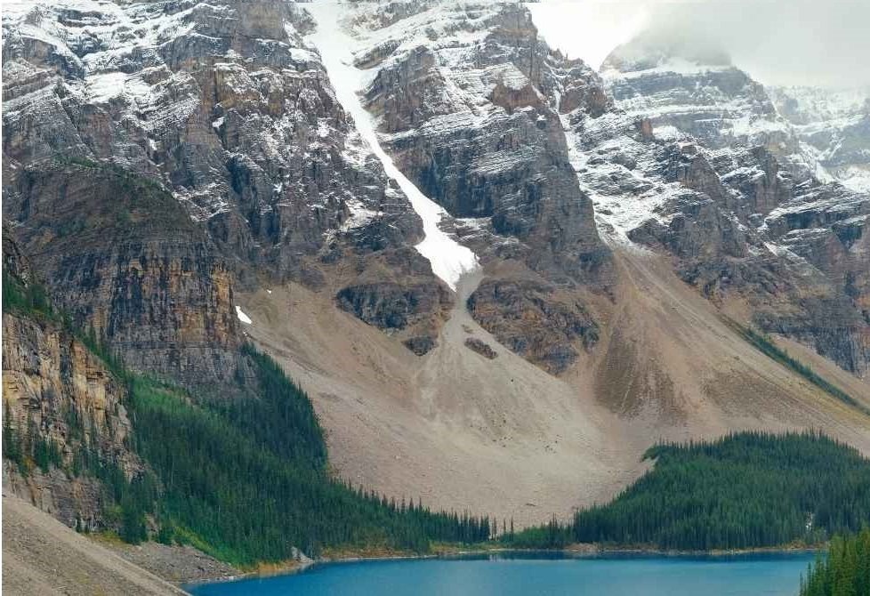
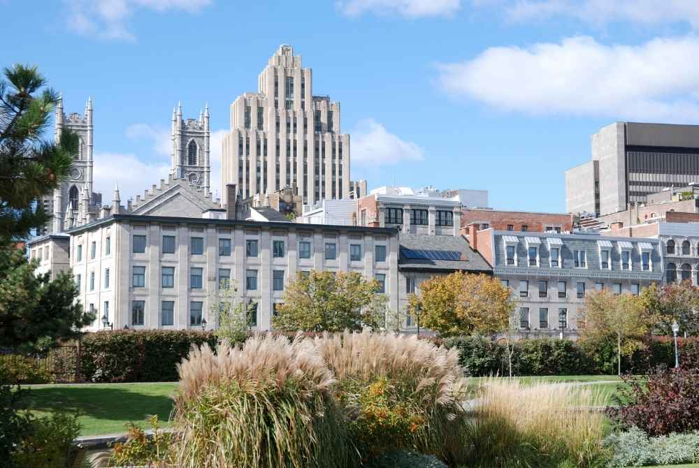

Os 10 Principais Pontos Turísticos do Canadá
-
1. Niagra Falls
Esta é a atração turística mais famosa do país. Atrai milhões de turistas todos os anos. Com uma queda estimada em 57 metros, fica a apenas uma hora de carro de Toronto. Existem vários pontos-chave para lhe dar uma vista esplêndida da queda.
-
2. Parque Nacional de Banff
Este parque nacional está situado no centro das poderosas Montanhas Rochosas. Toda a província de Alberta é um lugar que vale a pena visitar, mostrando os locais e cenários mais pitorescos. Você pode encontrar tudo aqui, de picos cobertos de neve a lagos verde-esmeralda.
-
3. CN Tower, Toronto
Se gosta de visitar marcos importantes durante as suas viagens ao estrangeiro, não deve perder este. É na margem do Lago Ontário. Tem 553 metros de altura, cobrindo elegantemente o horizonte. Outra atração turística é o restaurante giratório 360 que se encontra no topo desta torre com vista para a cidade.
-
4. Old Quebec

Declarado Patrimônio Mundial da UNESCO, é outra joia da coroa do Canadá. Com os edifícios mais históricos do país, esta cidade está espalhada por Lower e Upper Town de Quebec. A Cidade Baixa, que fica ao longo do rio São Lourenço, é o lar do famoso Fairmont Le Chateau Frontenac, incluindo muitos outros tesouros. Situado em falésias de 100 metros de altura, o Upper Town é o terreno da Citadel, Place d'Armes e Plains of Abraham. É bem desenvolvido para receber turistas. Diferentes restaurantes, lojas e museus são as principais atrações além das históricas.
-
5. Whistler
Esta famosa estação de esqui fica a apenas duas horas de Vancouver. Apesar de pequena, sempre foi um importante ponto turístico. Com o tempo, também passou a atrair turistas na temporada de verão, com atrações como golfe, mountain bike e uma cidade repleta de atividades animadas. Whistler também sediou os Jogos Olímpicos de Inverno em 2010. De uma experiência gastronômica de classe mundial ao esqui, você pode ter tudo nesta vila.
-
6. Parliament Hill, Ottawa
Adornada pelos edifícios do Parlamento em estilo neogótico construídos no século 19, a Colina do Parlamento em Ottawa fica acima do rio homônimo. O lugar imperdível aqui é a Torre da Paz, que separa o Senado e a Câmara dos Comuns. Torna-se uma atração turística especial no verão, quando ocorre a troca da guarda. Geralmente acontece no gramado da frente da Câmara do Parlamento, se o tempo permitir. Você também pode desfrutar de um passeio ao longo do Rio Ottawa, situado logo abaixo.
-
7. Sítio Histórico Nacional de St. John's Signal Hill
O Sítio Histórico Nacional Signal Hill está situado na entrada do porto de St. John. O primeiro sinal transatlântico sem fio foi recebido aqui em 1901. Este sítio também é um memorial à guerra dos Sete Anos com a França. O edifício de visita obrigatória aqui é a Torre Cabot. Foi construído para comemorar o 400º aniversário de Newfoundland em 1897. Veja exposições especiais sobre a história da Signal Tower e visitar a seção especial destinada à memória de Guglielmo Marconi.
-
8. Old Montreal
Se você quer férias relaxantes, repletas de opções de restaurantes finos e muitas compras, este é o lugar certo. Embora possa ver a vida urbana em toda a sua glória na cidade de Montreal, muitos turistas visitam a Velha Montreal para passar um tempo na cachoeira, ao lado da natureza. Os lugares obrigatórios para visitar são a Rue Bonsecours, o belo interior da Basílica de Notre-Dame, a Prefeitura de 1870 e o marco histórico Marche Bonsecours.
-
9. Ursos polares de Churchill, Manitoba
Se você gosta de vida selvagem, pode aproveitar a chance de ver os ursos polares morando aqui. Essas criaturas majestosas migram para o gelo na Baía de Hudson, na cidade de Churchill, no norte de Manitoba. Os habitantes locais organizam passeios especiais em buggies de tundra com janelas em gaiolas. Os turistas podem desfrutar de encontros próximos com os majestosos ursos polares e vê-los em toda a sua glória. Os ursos geralmente saem quando o gelo congela, em outubro ou novembro.
-
10. Ilha de Vancouver
É cerca de duas horas de distância do continente. A principal atração turística aqui é a cidade de Victoria, pois é o centro cultural para passeios turísticos. Mas se quiser satisfazer o lado amante da natureza de sua alma, vá para o Norte para ver algumas paisagens incríveis e exibições da natureza. Se preferir conforto, é ideal se hospedar em uma pousada ou resort de lá.